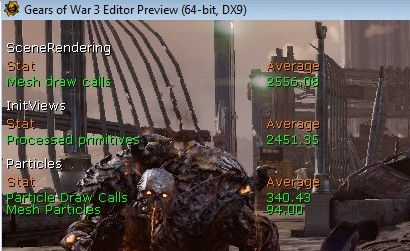

针对分屏优化内容
文档变更记录: 由 Daniel Wright 创建。
概述
注意： 本页面是针对像Xbox360和PS3这样的当代游戏机平台的，针对其他平台的权衡取舍处理可能是不同的。
分屏严重地打击了渲染线程，因为它要渲染的内容是原来的两倍。在渲染线程上有两个主要的性能消耗： 考虑进行渲染的图元组件或“处理的图元”的数量；渲染可见网格物体所使用的总的描画函数的数量，也就是统计数据中的“Mesh draw calls（网格物体描画调用）”。但并不是所有的描画调用的性能消耗都是相等的。粒子描画函数调用的性能消耗大约是静态网格物体和BSP描画函数调用的三倍，而想InterpActors、KActors和SkeletalMeshActors这样的动态对象的性能消耗大约是静态网格物体和BSp描画函数的两倍。网格物体发射器基于每个粒子生成一个描画调用，所以它们往往是给定场景中性能消耗最昂贵的资源。
在分屏模式下在控制台中输入'stat splitscreen'可以获得用于查看分屏性能的最佳统计数据。这个在PIE中也可以正常工作，您仅需要输入'debugcreateplayer 1'进入到分屏模式。您可以或者连接两个控制器或者使用 'ssswapcontrollers'切换输入到其他玩家。这里是战争机器3 SP 关卡在优化前的统计数据：

上面的统计数据导致在Xbox 360上花费50ms的渲染线程时间。为了降低这个值，达到在分割屏幕中使用33ms的目标，它们大约需要：
- 1600个网格物体描画调用。
- 1700个处理图元。
- 150个粒子描画调用。
找出性能消耗最昂贵的组件
首先，您需要知道关卡中的哪些部分是超出预算的。这可以通过启用'stat splitscreen'命令并在PIE或Xbox分屏中玩游戏，然后将获得数据和上面的目标进行比较。
对于静态网格物体actors，图元统计数据浏览器可能是最好用的工具。注意，您可以通过排序边界半径来快速找到关卡中最小的网格物体。您也可以选择多个行并按下回车来选中所有相关actors。
对于粒子，您可以通过输入'TRACKPARTICLERENDERINGSTATS' 控制台命令，接着在关卡中玩游戏，然后在输入'DUMPPARTICLERENDERINGSTATS'命令，收集到统计数据后，可以查看哪个粒子发射器和粒子系统的性能消耗最昂贵。'DUMPPARTICLERENDERINGSTATS'命令将会将会把两个电子表格文件转存到粒子统计数据的本地日志目录中。
针对分幕缩小内容
最好的方法是图元上的MaxDrawDistance或者使用设置激进的剔除距离体积。MaxDrawDistance可能会导致突兀的暴出现象，但是它比设置细节模式导致的问题更少，因为因为网格物体从近距离处渲染。MaxDrawDistance的不利方面是它仅降低统计数据 'Mesh draw calls(网格物体描画调用)'而不降低‘Processed primitives(处理的图元)’。关于设置剔除距离体积的文档，请参照这里： 可见性剔除。
下一个最好的方法是将组件的DetailMode（细节模式）设置为High（高），这将使得它不会在分屏中渲染。这可以通过右击-> LOD Operations(LOD操作)-> Set Detail Mode（设置细节模式）->High(高级)来完成。但是当时用这个方法时您必须要小心，防止由于在光照贴图上留下暗点的网格物体或在光照贴图上创建了一个洞以便从外部接收光照的网格物体导致的可见的失真现象。您可以通过View(视图) -> Detail Mode(细节模式) -> Medium(中等)或者通过跳转到PIE中并输入'debugcreateplayer 1'来预览分屏中显示的内容。通过这种方式删除组件对于性能来说是最有效的，因为它降低了'Processed primitives(处理图元)' 和'Mesh draw calls(网格物体描画调用)'。
粒子发射器(在Cascade列中)有了个新的属性MediumDetailSpawnRateScale。这可以用于降低分屏中粒子个数，如果将该值设置为0将会完全地禁用粒子发射器。网格物体发射器基于每个粒子生成一个描画调用，所以降低粒子数量对它来说会产生很大的影响。在其他类型的发射器上，如果设置MediumDetailSpawnRateScale为0将仅会减少适当的性能消耗。